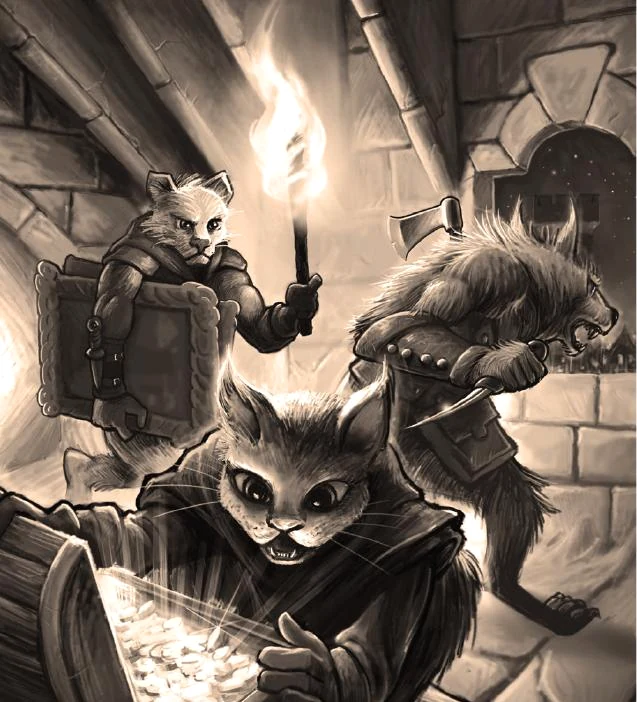

Drakar och Demoner · Gemensam karaktärsportal
Gruppen samlas här.
Framsidan växer med sällskapet. Varje karaktär får samma kompletta sida med karaktärsblad, bakgrund, inventory, journal, rustning, erfarenhet och tärningsslag.

Sällskapet
Våra karaktärer
Klicka på en karaktär och välj sedan översikt, karaktärsblad, bakgrund, inventory eller journal. Allt hör ihop med just den karaktären.
Lokalt spelverktyg
Gruppen sparas i webbläsaren
Karaktärsuppgifter sparas automatiskt på den enhet där de skrivs in. Uppladdade porträtt, karaktärsblad, bakgrund, inventory och journal flyttas tillsammans genom karaktärspaket på sidan Karaktärerna.
Säkerhetskopia av hela gruppen
Exporten nedan säkerhetskopierar gruppens lokala data. Varje spelare kan dessutom exportera just sin karaktär med blad, bakgrund, inventory och journal från den egna karaktärssidan.